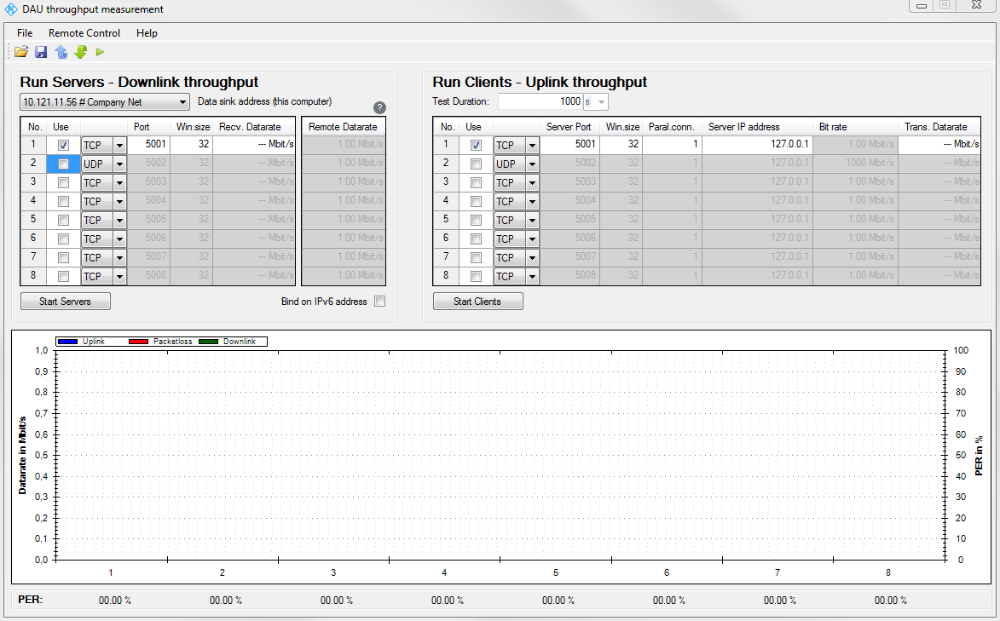

Configuring Iperf on the DUT
For an iperf measurement, the iperf tool must be running at both ends of a connection, at the DAU side and at the DUT side.
To ensure compatibility to the iperf tool used by the DAU, use the iperf remote configuration program for Windows at the DUT side. You can download it from the tools section of the web portal or the samba share.
The following figure shows the user interface of the iperf remote configuration program. Specify the properties of the server and client instances as necessary. The settings are equal to the settings on the DAU, see "Iperf Tab".

Iperf remote configuration program for the DUT
During an iperf measurement, the tool at DUT side shows the IP performance of the downlink, while the DAU shows the IP performance of the uplink.